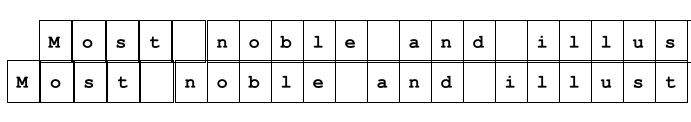
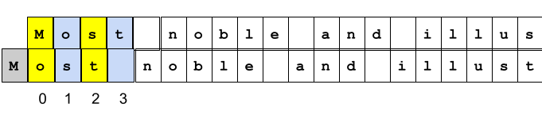
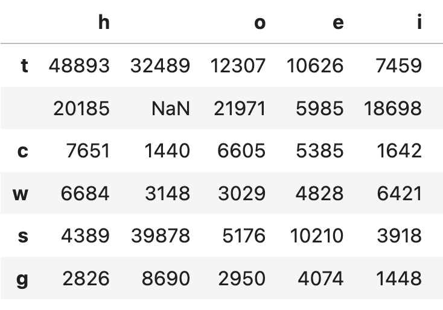

Reading Machines#
Exploring the Linguistic Unconscious of AI#
Introduction: Two ways of thinking about computation#
The history of computing revolves around efforts to automate the human labor of computation.[1] And in many narratives of this history, the algorithm plays a central role. By algorithm, I refer to methods of reducing complex calculations and other operations to explicit formal rules, rules that can be implemented with rigor and precision by purely mechanical or electronic means.[2]
But as a means of understanding Chat GPT and other forms of generative AI, a consideration of algorithms only gets us so far. In fact, when it comes to the large language models that have captivated the public imagination, in order to make sense of their “unreasonable effectiveness,” we must attend to another strand of computing, one which, though bound up with the first, manifests distinct pressures and concerns.[3] Instead of formal logic and mathematical proof, this strand draws on traditions of thinking about data, randomness, and probability. And instead of the prescription of (computational) actions, it aims at the description and prediction of (non-computational) aspects of the world.
A key moment in this tradition, in light of later developments, remains Claude Shannon’s* work on modeling the statistical structure of printed English ([Sha48]). In this interactive document, we will use the Python programming language to reproduce a couple of the experiments that Shannon* reported in his famous article, in the hopes of pulling back the curtain a bit on what seems to many (and not unreasonably) as evidence of a ghost in the machine. I, for one, do find many of these experiences haunting. But maybe the haunting doesn’t happen where we at first assume.[4]
The material that follows draws on and is inspired by my reading of Lydia Liu’s The Freudian Robot, one of the few works in the humanities that I’m aware of to deal with Shannon’s work in depth. See [Liu10].
Note
How to use this document (notebook)
Notes on the format
This document supports the aim, as articulated by Raley and Rhee, of “cultivating some degree of participatory and embodied expertise” as part of a critical perspective on AI [RR23]. Technically and rhetorically, the document belongs to a genre by now prevalent across many disciplines: the computational notebook. If you haven’t encountered this kind of document before, it represents a mixture of expository prose and computer code; the code is meant to be run (and in some instances, modified) by the user, to produce results that complement, illustrate, or otherwise support the exposition. Such notebooks most often evoke the model of empirical demonstration that derives its warrant from the natural and physical sciences; in relation to this model, the code allows the authors to “reproduce” an experiment (or portions of an experimental protocol) for the reader in “real” time (as opposed to merely reporting the results).[5]
Using the Python language in this format allows us to both implement – and automate – Claude Shannon’s* methods of analyzing and manipulating text – methods that Shannon* originally deployed without the benefit of a computer. Python, like any other modern progamming language, makes these methods relatively trivial to perform. It is in that sense that I spoke of “reproducing” Shannon’s* “experiments” above. But I’ve also chosen to use Python in this particular format with Raley and Rhee’s call for a critical praxis in mind. Certainly, it would be possible to create a more seamless experience of the following, e.g., via a web app that would conceal the computational steps from the end user. But apps appeal to us because they perform this concealment, which fosters the impression that some “magic” is taking place behind the scenes. This aim of this document is, in part, to disrupt that concealment. Accordingly, I have included – alongside an exposition of Shannon’s* methods that goes into greater technical detail than that found in Liu’s book – annnotations of the Python code itself, which is meant to clarify how those methods get translated into a programming language. Reading these annotations is (I hope) not necessary for understanding the methods themselves. But for those interested in how code works, or for those with prior exposure to a programming language, these annotations may prove useful. With the exception of some introductory material, the annotations are marked off from the rest of the document in sections titled Reading the code.
Interacting with the document
To get the most out of this document, you are encouraged to run the code where it appears in the executable sections below. Because Shannon’s* methods are stochastic, i.e., involving randomized selections among enumerated alternatives, the results of running much of this code will vary with each execution, and certain patterns will emerge clearly only over repeated executions. In addition, some code sections are designed to allow the reader/user to manipulate input values in order to assess their effect on the output.
In order to run the code, you will open a copy of this document in Google’s Colaboratory service. Google Colab is a freely available platform for programming with Python that requires no local installation and provides decent compute resources (memory and processing power).
To use this document in Colab, follow the steps below (or watch this short video):
Click the rocket icon in the upper-right corner of this page.
Select the
Google Colaboption.A new tab should open in your browser, displaying the content of this page but in the Colab interface.
Within that tab, click the button
Copy to Drivefrom the menu at the top to create your own copy of the document (so that you can preserve any changes you make as well as the output from your interactions).
{kind=link}
The Colab version of the document is backed by a running instance of the Python kernel (the program that runs Python progams), meaning that you can run the code and see the results in the Colab interface. To run any of the code sections, click the play icon to the left of that section, as in the image below.
{kind=link}
The logic of a programming language like Python is strictly linear. Running code sections out of order, or skipping a code section, will often result in errors, which will appear below the code section that triggered the error, in lieu of the expected output. If you start to encounter unexpected errors, go to the Colab menu at the top of the browser window and select
Runtime - Restart Session. Then run each of the code sections in order, starting from the top of the document.
Note that the Reading the code sections, as well as footnotes and references, have been ommitted from the Colab version of this document in order to make the latter easier to use. So you may want to toggle back and forth between the two versions. (I apologize for that inconvenience – it’s a technical limitation I have not had time to address.)
Two kinds of coding#
Before we delve into our experiments, let’s clarify some terminology. In particular, what do we mean by code?
The demonstration below goes into a little more explicit detail, as far as the mechanics of Python are concerned, than the rest of this document. That’s intended to motivate the contrast to follow, between the kind of code we write in Python, and the kind of coding that Shannon’s* work deals with.
Programs as code(s)#
We imagine computers as machines that operate on 1’s and 0’s. In fact, the 1’s and 0’s are themselves an abstraction for human convenience: digital computation happens as a series of electronic pulses: switches that are either “on” or “off.” (Think of counting to 10 by flipping a light switch on and off 10 times.)
Every digital representation – everything that can be computed by a digital computer – must be encoded, ultimately, in this binary form.
But to make computers efficient for human use, many additional layers of abstraction have been developed on top of the basic binary layer. By virtue of using computers and smartphones, we are all familiar with the concept of an interface, which instantiates a set of rules prescribing how we are to interact with the device in order to accomplish well-defined tasks. These interactions get encoded down to the level of electronic pulses (and the results of the computation are translated back into the encoding of the interface).
A programming language is also an interface: a text-based one. It represents a code into which we can translate our instructions for computation, in order for those instructions to be encoded further for processing.
Baby steps in Python#
Let’s start with a single instruction. Run the following line of Python code by clicking the button,. You won’t see any output – that’s okay.
answer_to_everything = 42
In the encoding specified by the Python language, the equals sign (=) is an instruction that loosely translates to: “Store this value (on the right side) somewhere in memory, and give that location in memory the provided name (on the left side).” The following image presents one way of imagining what happens in response to this code (with the caveat that, ultimately, the letters and numbers are represented by their binary encoding).
{kind=link}
By running the previous line of code, we have created a variable, which maps the name answer_to_everything to the value 42. We can use the variable to retrieve its value (for use in other parts of our program). Run the code below to see some output.
print(answer_to_everything)
The print() function is a command in Python syntax that displays a value on the screen. Python’s syntax picks out the following elements:
the name
printthe parentheses that follow it, which enclose the argument
the argument itself, which in this case is a variable name (previously defined)
These elements are perfectly arbitrary (in the Saussurean sense). This syntax was invented by the designers of the Python language, though they drew on conventions found in other programming languages. The point is that nothing about the Python command print(answer_to_everything) makes its operation transparent; to know what it does, you have to know the language (or, at least, be familiar with the conventions of programming languages more generally) – just as when learning to speak a foreign language, you can’t deduce much about the meaning of the words from the way they look or sound.
However, unlike so-called natural languages, even minor deviations in syntax will usually cause errors, and errors will usually bring the whole program to a crashing halt.[6]
Run the code below – you should see an error message.
print(answer_to_everythin)
A misspelled variable name causes Python to abort its computation. Imagine if conversation ground to a halt whenever one of the parties mispronounced a word or used a malapropism!
I tend to say that Python is extremely literal. But of course, this is merely an analogy, and a loose one. There is no room for metaphor in programming languages, at least, not as far as the computation itself is concerned. The operation of a language like Python is determined by the algorithms used to implement it. Given the same input and the same conditions of operation, a given Python program should produce the same output every time. (If it does not, that’s usually considered a bug.)
Encoding text#
While programming languages are ways of encoding algorithms, the operation of the resulting programs does depend, in most cases, on more than just the algorithm itself. Programs depend on data. And in order to be used in computation, data must be encoded, too.
As an engineer at Bell Labs, Claude Shannon* wanted to find – mathematically – the most efficient means of encoding data for electronic transmission. Note that this task involves a rather different set of factors from those that influence the design of a programming language.
The designer of the language has the luxury of insisting on a programmer’s fidelity to the specified syntax. In working in Python, we have to write print(42), exactly as written, in order to display the number 42 on the screen. if we forget the parentheses, for instance, the command won’t work. But when we talk on the phone (or via Zoom, etc.), it would certainly be a hassle if we had to first translate our words into a strict, fault-intolerant code like that of Python.
All the same, there is no digital (electronic) representation without encoding. To refer to the difference between these two types of codes, I am drawing a distinction between algorithms and data. Shannon’s* work illustrates the importance of this distinction, which remains relevant to any consideration of machine learning and generative AI.
Representing text in Python#
Before we turn to Shannon’s* experiments with English text, let’s look briefly at how Python represents text as data.
a_text = "Most noble and illustrious drinkers, and you thrice precious pockified blades (for to you, and none else, do I dedicate my writings), Alcibiades, in that dialogue of Plato's, which is entitled The Banquet, whilst he was setting forth the praises of his schoolmaster Socrates (without all question the prince of philosophers), amongst other discourses to that purpose, said that he resembled the Silenes."
Running the code above creates a new variable, a_text, and assigns it to a string representing the first sentence from Francois Rabelais’ early Modern novel, Gargantua and Pantagruel. A string is the most basic way in Python of representing text, where “text” means anything that is not to be treated purely a numeric value.
Anything between quotation marks (either double "" or single '') is a string.
One problem with strings in Python (and other programming languages) is that they have very little structure. A Python string is a sequence of characters, where a character is a letter of a recognized alphabet, a punctuation mark, a space, etc. Each character is stored in the computer’s memory as a numeric code, and from that perspective, all characters are essentially equal. We can access a single character in a string by supplying its position. (Python counts characters in strings from left to right, starting with 0, not 1, for the first character.)
a_text[5]
We can access a sequence of characters – here, the characters in positions 11 through 50.
a_text[10:50]
We can even divide the string into pieces, using the occurences of particular characters. The code below divides our text on the white space, returning a list (another Python construct) of smaller strings.
a_text.split()
The strings in the list above correspond, loosely, to the individual words in the sentence from Rabelais’ text. But Python really has no concept of “word,” neither in English, nor any other (natural) language.
Language & chance#
It’s probably fair to say that when Shannon* was developing his mathematical approach to encoding information, the algorithmic ideal dominated computational research in Western Europe and the United States. In previous decades, philosophers like Bertrand Russell and mathematicians like David Hilbert had sought to develop a formal approach to mathematical proof, an approach that, they hoped, would ultimately unify the scientific disciplines. The goal of such research was to identify a core set of axioms, or logical rules, in terms of which all other “rigorous” methods of thought could be expressed. In other words, to reduce to zero the uncertainty and ambiguity plaguing natural language as a tool for expression: to make language algorithmic.
Working within this tradition, Alan Turing had developed his model of what would become the digital computer.
But can language as humans use it be reduced to such formal rules? On the face of it, it’s easy to think not. However, that conclusion presents a problem for computation involving natural language, since the computer is, at bottom, a formal-rule-following machine. Shannon’s* work implicitly challenges the assumption that we need to resort to formal rules in order to deal with the uncertainty in language. Instead, he sought mathematical means for quantifying that uncertainty.[7] And as Lydia Liu points out, that effort began with a set of observations about patterns in printed English texts.
The long history of code#
Of course, Shannon’s* insights do not begin with Shannon*. A long history predates him of speculation on what we might call the statistical features of language. Speculations of some practical urgency, given the even longer history of cryptographic communication in political, military, and other contexts.
In the 9th Century CE, the Arab mathematician and philosopher Al-Kindi composed a work on cryptography in which he applied the relative frequency of letters in Arabic to a method for decrypting coded text ([Bro11]). Al-Kindi, alongside his many other accomplishments, composed the earliest surviving analysis of this kind, which is a direct precursor of methods popular in the digital humanities (word frequency analysis), among other many other domains.
Closer yet to the hearts of digital humanists, the Russian mathematician Andrei Markov, in a 1913 address to the Russian Academy of Sciences, reported on the results of his experiment with Aleksandr Pushkin’s Evegnii Onegin: a statistical analysis of the occurrences of consonants and vowels in the first two chapters of Pushkin’s novel in verse ([Mar06]). From the perspective of today’s large-language models, Markov improved on Al-Kindi’s methods by counting not just isolated occurrences of vowels or consonants, but co-occurences: that is, where a vowel follows a consonant, a consonant a vowel, etc. As a means of articulating the structure of a sequential process, Markov’s method generalizes into a powerful mathematical tool, to which he lends his name. We will see how Shannon* used Markov chains shortly.
A spate of tedious counting#
First, however, let’s illustrate the more basic method, just to get a feel for its effectiveness.
We’ll take a text of sufficient length. Urquhart’s English translation of Gargantual and Pantagruel, in the Everyman’s Library edition, clocks in at 823 pages; that’s a decent sample. If we were following the methods used by Al-Kindi, Markov, or even Shannon* himself, we would proceed as follows:
Make a list of the letters of the alphabet on a sheet of paper.
Go through the text, letter by letter.
Beside each letter on your paper, make one mark each time you encounter that letter in the text.
Fortunately for us, we can avail ourselves of a computer to do this work.
In the following sections of Python code, we download the Project Gutenberg edition of Rabelais’ novel, saving it to the computer as a text file. We can read the whole file into the computer’s memory as a single Python string. Then using a property of Python strings that allows us to iterate over them, we can automate the process of counting up the occurences of each character.
from urllib.request import urlretrieve
urlretrieve("https://www.gutenberg.org/cache/epub/1200/pg1200.txt", "gargantua.txt")
with open('gargantua.txt') as f:
g_text = f.read()
Reading the code
The
from…importstatement (lines of Python code are called statements) loads some external code (i.e., code that wasn’t automatically loaded when we started our Python session) for use in retrieving data from the web.This external code is in the form of a Python function called
urlretrieve(). Likeprint()in the previous example, a Python function is recognizable by the parentheses following its name.Within these parentheses, we can supply zero, one, or more arguments. Arguments are values or variables that the function will use to do some work. We can organize our code into functions in order to make it more easily reusable – even by others. I did not write the
urlretrievefunction – this code is merely importing and using it. Calling an external function in programming is a little like citing a source in writing: a way of building on others’ work.Calling the
urlretrieve()function (what we’re doing here) doesn’t produce any visible output, but behind the scenes, it fetches the data at the URL (the first argument, between the first pair of quotation marks) and saves that data as a file (the name of which is provided as the second argument,"gargantua.txt").In the next section, I use another function,
open(), to open the file, meaning to make it available in the computer’s memory for access. Theas fpart of that line indicates that the file, while it’s open, can be accessed via the variablef.In the indented part, I use the
read()method to load the contents of the file into memory. using the variableg_text. Henceforth, the entirety of Rabelais’ text is available for use by reference to theg_textvariable. (For the duration of this Python session, that is – if I close this browser tab, I’ll lose all the variables, etc., and will have to re-run the code to re-create them.)
Note on Python variables
Variable names in Python do not go inside quotation marks.
Variables are like variables in algebra: they are arbitrary names that stand for specified values.
They usually appear, when first used, either on the left side of an equals sign (
g_text = f.read()) or inside the parentheses following a function call. That is how the variables acquire their values.It’s worth reiterating: variable names (and function names, too) are arbitrary: i.e., it’s the programmer’s choice. In the code in this document, I’ve tried to create variable names that at least suggest what they refer to, but that’s just a stylistic convention for making code easier to read; it makes no difference to the computer.
Running the code below uses the len() function to display the length – in characters – of a string.
len(g_text)
The Project Gutenberg version of Gargantua and Pantagruel has close to a 2 million characters.
As an initial exercise, we can count the frequency with which each character appears. Run the following section of code to create a structure mapping each character to its frequency.
g_characters = {}
for character in g_text:
if character in g_characters:
g_characters[character] += 1
else:
g_characters[character] = 1
Run the code below to reveal the frequencies.
g_characters
Reading the code
Data structures in Python are often identified by punctuation marks. The curly braces in the output above indicate that the outermost structure is a dictionary, which is a mapping of keys to values. The keys are sort of like variable names, except that they go inside quotation marks.
Data structures in Python can contain other data structures. Our `g_characters_ dictionary ultimately consists of Python strings mapped to integers (a numeric data type in Python).
To create our dictionary of character frequencies, we use the following logic:
We create the variable
g_characters, setting it to an empty dictionary ({}).We loop over the
g_textvariable, which holds a string, i.e., a sequence of characters. Theforkeyword in Python allows us to access each element in a sequence (like a string) one at a time.Each time through the loop, the current character will be assigned to the
charactervariable.In the code indented under the
forline, we check to see whether we have encountered this particular character before (using the variablecharacterto refer to it, just as one might solve forxin an algebraic equation).If we have encountered this character already, we assume that it’s associated with a number in our
g_charactersdictionary, and we increment that number (just as if we were making another hash mark on a sheet of paper).Otherwise, we add this character to
g_charactersand set the tally to 1 (since this is the first occurrence of that character).
Looking at the contents of g_characters, we can see that it consists of more than just the letters in standard Latin script. There are punctuation marks, numerals, and other symbols, like \n, which represents a line break.
But if we look at the 10 most commonly occurring characters, with one exception, it aligns well with the relative frequency of letters in English as reported from studying large textual corpora.
sorted(g_characters.items(), key=lambda x: x[1], reverse=True)[:10]
Reading the code
This last line code sacrifices clarity for brevity – a practice I will generally refrain from in this document. But it does illustrate how we can compose complex operations in Python out simpler elements – which is the fundamental practice of programming.
Here we sort our g_characters by the numeric elements (so the counts, not the characters), using the built-in sorted function, to which we provide the optional argument reverse=True to sort in descending order. Then in the square brackets at the end of the line, we look at the first 10 elements in that (now) sorted sequence.
Random writing#
At the heart of Shannon’s* method lies the notion of random sampling. It’s perhaps easiest to illustrate this concept before defining it.
Using more Python code, let’s compare what happens when we construct two random samples of the letters of the Latin script, one in which we select each letter with equal probability, and the other in which we weight our selections according to the frequency we have computed above.
from random import choices
alphabet = "abcdefghijklmnopqrstuvwxyz"
print("".join(choices(alphabet, k=50)))
The code above uses the choices() method to create a sample of 50 letters, where each letter is equally likely to appear in our sample. Imagine rolling a 26-sided die, with a different letter on each face, 50 times, writing down the letter that comes up on top each time.
Now let’s run this trial again, this time supplying the observed frequency of the letters in Gargantual and Pantagruel as weights to the sampling. (For simplicity’s sake, we first remove everything but the 26 lowercase letters of the Latin script: numbers, punctuation marks, spaces, letters with accent marks, etc.)
g_alpha_chars = {}
for c, n in g_characters.items():
if c in alphabet:
g_alpha_chars[c] = n
letters = list(g_alpha_chars.keys())
weights = g_alpha_chars.values()
print(''.join(choices(letters, weights, k=50)))
Do you notice any difference between the two results? It depends to some extent on roll of the dice, since both selections are still random. But you might see more runs of letters in the second that resemble sequences you could expect in English, maybe even a word or two hiding in there.
Reading the code
The line
print("".join(choices(alphabet, k=50)))displays the result of using thechoicesfunction to take a random, evenly weighted sample of sizek. Becausechoicesreturns a Python list (another data type), not a string, we use the.join()method to create a single string out of the 50 letters in our sample – just to make it more readable.We use another
forloop and anifstatement to create a new dictionary,g_alpha_chars, to hold just the frequencies of those characters that can be found in the string calledalphabet(previously defined).Then we separate out the characters and their frequencies into two parallel lists. (We do this on account of the way
choices()is defined to work.)Finally, we use these two lists as arguments to
choices, where the presence of theweightsargument means that the sample will no longer be equally weighted, but that each character inletterswill be selected with the frequency suppled inweights.
The difference a space makes#
On Liu’s telling, one of Shannon’s* key innovations was his realization that in analyzing printed English, the space between words counts as a character. It’s the spaces that delimit words in printed text; without them, our analysis fails to account for word boundaries.
Let’s say what happens when we include the space character in our frequencies.
g_shannon_chars = {}
for c, n in g_characters.items():
if c in alphabet or c == " ":
g_shannon_chars[c] = n
letters = list(g_shannon_chars.keys())
weights=g_shannon_chars.values()
print(''.join(choices(letters, weights, k=50)))
It may not seem like much improvement, but now we’re starting to see sequences of recognizable “word length,” considering the average lengths of words in English.
But note that we haven’t so far actually tallied anything that would count as a word: we’re still operating exclusively at the level of individual characters or letters.
Law-abiding numbers#
To unpack what we’re doing a little more: when we make a weighted selection from the letters of the alphabet, using the frequencies we’ve observed, it’s equivalent to drawing letters out of a bag of Scrabble tiles, where different tiles appear in a different amounts. If there are 5 e’s in the bag but only 1 z, you might draw a z, but over time, you’re more likely to draw an e. And if you make repeated draws, recording the letter you draw each time before putting it back in the bag, your final tally of letters will usually have more e’s than z’s.
In probability theory, this expectation is called the law of large numbers. It describes the fundamental intuition behind the utility of averages, as well as their limitation: sampling better approximates the mathematical average as the samples get larger, but in every case, we’re talking about behavior in the aggregate, not the individual case.
Language as a drunken walk#
How effectively can we model natural language using statistical means? It’s worth dwelling on the assumptions latent in this question. Parts of speech, word order, syntactic dependencies, etc: none of these classically linguistic entities come up for discussion in Shannon’s* article. Nor are there any claims therein about underlying structures of thought that might map onto grammatical or syntactic structures, such as we find in the Chomskian theory of generative grammar. The latter theory remains squarely within the algorithmic paradigm: the search for formal rules or laws of thought.
Language, in Shannon’s* treatment, resembles a different kind of phenomena: biological populations, financial markets, or the weather. In each of these systems, it is taken as a given that there are simply too many variables at play to arrive at the kind of description that would even remotely resemble the steps of a formally logical proof. Rather, the systems are described, and attempts are made to predict their behavior over time, drawing on observable patterns held to be valid in the aggregate.
Whether the human linguistic faculty is best described in terms of formal, algorithmic rules, or as something else (emotional weather, perhaps), was not a question germane to Shannon’s* analysis. Inn the introduction to his 1948 article, he claims that the “semantic aspects of communication are irrelevant to the engineering problem” (i.e., the problem of devising efficient means of encoding messages, linguistic or otherwise). These “semantic aspects,” excluded from “the engineering problem,” return to haunt the scene of generative AI with a vengeance. But in order to set this scene, let’s return to Shannon’s* experiments.
Following Andrei Markov, Shannon* modeled printed English as a Markov chain: as a special kind of weighted selection where the weights of the current selection depend only on the immediately previous selection. A Markov chain is often called a random walk, though the conventional illustration is of a person who has had a bit too much to drink stumbling about. Observing such a situation, you might not be able to determine where the person is trying to go; all you can predict is that their next position will fall within stumbling distance of where they’re standing right now. Or if you prefer a less Rabelaisian metaphor, imagine threading your way among a host of puddles. With each step, you try to keep to dry land, but your path is likely to be anything but linear.
It turns out that Markov chains can be used to model lots of processes in the physical world. And they can be used to model language, too, as Claude Shannon* showed.
More tedious counting#
One way to construct such an analysis is as follows: represent your sample of text as a continuous string of characters. (As we’ve seen, that’s easy to do in Python.) Then “glue” it to another string, representing the same text, but with every character shifted to the left by one position. For example, the first several characters of the first sentence from Gargantua and Pantagruel would look like this:
{kind=link}
With the exception of the dangling left-most and right-most characters, you now have a pair of strings that yield, for each position, a pair of characters. In the image below, the first few successive pairs are shown, along with the position of each pair of characters with respect to the “glued” strings.
{kind=link}
These pairs are called bigrams. But in order to construct a Markov chain, we’re not just counting bigrams. Rather, we want to create what’s called a transition table: a table where we can look up a given character – the letter e, say – and then for any other character that can follow e, find the frequency with which it occurs in that position (i.e., following an e). If a given character never follows another character, its bigram doesn’t exist in the table.
Below are shown some of the most common bigrams in such a transition table created on the basis of Gargantua and Pantagruel.
{kind=link}
Preparing the text#
To simplify our analysis, first we’ll standardize the source text a bit. Removing punctuation and non-alphabetic characters, removing extra runs of white space and line breaks, and converting everything to lowercase will make patterns in the results easier to see (though it’s really sort of an aesthetic choice, and as I’ve suggested, Shannon’s* method doesn’t presuppose any essential difference between the letters of words and the punctuation marks that accompany them).
Run the two code sections below to clean the text of Gargantua and Pantagruel.
def normalize_text(text):
'''
Reduces the provided string to a string consisting of just alphabetic, lowercase characters from the Latin script and non-contiguous spaces.
'''
text_lower = text.lower()
text_lower = text_lower.replace("\n", " ").replace("\t", " ")
text_norm = ""
for char in text_lower:
if (char in "abcdefghijklmnopqrstuvwxyz") or (char == " " and text_norm[-1] != " "):
text_norm += char
return text_norm
g_text_norm = normalize_text(g_text)
g_text_norm[:1000]
Reading the code
The bulk of this code defines a new function, normalize_text(), which we can use to perform this procedure whenever we need to. The procedure is as follows:
Create a lowercased version of the provided
textargument, using the built-inlower()method.Using the built-in
replace()method, replace line breaks (the special character"\n") and tabs (the special character"\t"with single spaces.Create an empty string to hold the normalized text.
Loop over all the characters in the original string, and for each character, add to the normalized text only if it is a) an alphabetic character or b) a space, provided that the last element of the normalized string is not also a space. (This last condition ensures that we don’t end up with multiple contiguous spaces.)
The
returnkeyword is necessary to make our newtext_normvariable available in the context where we call the function.
Then we call this function on the g_text variable, assigning the return value to the new variable g_text_norm. (Again, don’t dwell on the names; it’s common in programming to have multiple variables referring to the same value, where each variable belongs to a different context. It’s a technique that helps reduce bugs in programming and make programs more efficient.)
Finally, we look at the first 1,000 characters in our normalized text.
This method isn’t perfect, but we’ll trust that any errors – like the disappearance of accented characters from French proper nouns, etc. – will get smoothed over in the aggregate.
Setting the table#
To create our transition table of bigrams, we’ll define two new functions in Python. The first function, create_ngrams, generalizes a bit from our immediate use case; by setting the parameter called n in the function call to a number higher than 2, we can create combinations of three or more successive characters (trigrams, quadgrams, etc.). This feature will be useful a little later.
Run the code below to define the function.
def create_ngrams(text, n=2):
'''
Creates a series of ngrams out of the provided text argument. The argument n determines the size of each ngram; n must be greater than or equal to 2.
Returns a list of ngrams, where each ngram is a Python tuple consisting of n characters.
'''
text_arrays = []
for i in range(n):
last_index = len(text) - (n - i - 1)
text_arrays.append(text[i:last_index])
return list(zip(*text_arrays))
Reading the code
The code here might look a little cryptic, but it’s doing what we illustrated above: taking a single string (the text argument) and transforming it into multiple, parallel, strings, each of which is copy of the previous but shifted to the left by one character. (The shifted characters get lopped off, so that each string remains the same size as the others.)
The
range()function just returns a list of numbers, from 0 up ton - 1.For each value of
iin our loop, we find the position of the string that isn - i - 1characters from the end. We do this to ensure that the strings line up. So ifnis 3, then the first time through the loop,iwill be 0, andn - i - 1will be2.Using Python’s string-slicing syntax, we take a portion of the string from
ito the position calculated above. So on the first time through our loop, our new string will start at the 0 position (the first character) and end with the antepenulimate character.When
iis 1, our new string will start at the 1 position (second character) and end with the penultimate character.When
iis 2, our new string will start at the 2 position (third character) and end with the last character.
A little reflection shows that all three of these strings will be of equal length.
Finally, we use the Python zip() function to align all three strings and separate them into groups of items that occupy the same position in each string, which you can visualize as follows:
[image]
Let’s illustrate our function with a small text first. The output is a Python list, which contains a series of additional collections (called tuples) nested within it. Each subcollection corresponds to a 2-character window, and the window is moved one character to the right each time.
This structure will allow us to create our transition table, showing which characters follow which other characters most often.
text = 'abcdefghijklmnopqrstuvwxyz'
create_ngrams(text, 2)
Run the code section below to define another function, create_transition_table, which does what its name suggests.
from collections import Counter
def create_transition_table(ngrams):
'''
Expects as input a list of tuples corresponding to ngrams.
Returns a dictionary of dictionaries, where the keys to the outer dictionary consist of strings corresponding to the first n-1 elements of each ngram.
The values of the outer dictionary are themselves dictionaries, where the keys are the nth elements each ngram, and the values are the frequence of occurrence.
'''
n = len(ngrams[0])
ttable = {}
for ngram in ngrams:
key = "".join(ngram[:n-1])
if key not in ttable:
ttable[key] = Counter()
ttable[key][ngram[-1]] += 1
return ttable
Reading the code
Since the
create_transition_tablefunction expects a list of n-grams as its argument, we find the value ofnby taking the length of the first element in the list.We define a new dictionary,
ttable, to hold our transitions.We loop over the n-grams in our list.
For every n-gram, we are going to separate it into the character in the nth position, and the sequence of characters from the first to the position
n - 1. Thus, ifnis 2, we separate the bigram into two characters. Ifnis 3, on the other hand, the first part consist of two characters. The second part will always be a single character, no matter the value ofn. That’s because we’re still calculating the frequency of individual characters. We’re just basing that frequency on a certain window of characters to the immediate left of each character, and that window can have different sizes.The first part of each n-gram is our dictionary key. Because we’re using a dictionary, we have to associate each key with a value.
However, unlike our first table of frequencies, the value of this key is actually another dictionary! That’s because any initial sequence of
n - 1characters can be followed (in theory) by any other character. And it’s the frequency of the latter that we’re calculating. So assumingnis 3, we might havethfollowed bye, andthfollowed bya, andthfollowed byo, etc. And we’re interested in the frequency of each of those combinations.If we haven’t seen this key before, we have to create its dictionary. For that, we use a special Python data structure called a
Counter. TheCounterjust saves us the step of having to initialize every value to 0.Finally, the line
ttable[key][ngram[-1]] += 1increments the numeric value associated with a) the character in the nth position of the current n-gram, which is in turn associated with b) the sequence of characters in the firstn - 1positions of the n-gram. So if the current value ofngramisthe, thenkeyisth, andngram[-1](which refers to the last character inngram) ise. So that line translates tottable["th"]["e"] += 1(which increments the value, whatever it is, by 1).
Now run the code below to create the transition table for the bigrams in the alphabet.
create_transition_table(create_ngrams(text, 2))
Here our transition table consists of frequencies that are all 1, because (by definition) each letter occurs only once in the alphabet. The way to read the table, however, is as follows:
The letter
boccurs after the lettera1 time in our (alphabet) sample.The letter
coccurs after the letterb1 time in our sample.…
Now let’s use these functions to create the transition table with bigrams Gargantua and Pantagruel.
g_ttable = create_transition_table(create_ngrams(g_text_norm, 2))
Our table will now be significantly bigger. But let’s use it see how frequently the letter e follows the letter h in our text:
g_ttable['h']['e']
We can visualize our table fairly easily by using a Python library called pandas.
Run the code below, which may take a moment to finish.
import pandas as pd
pd.set_option("display.precision", 0)
pd.DataFrame.from_dict(g_ttable, orient='index')
To read the table, select a row for the first letter, and then a column to find the frequency of the column letter appearing after the letter in the row. (In other words, read across then down.)
The space character appears as the empty column/row label in this table.
Automatic writing#
In Shannon’s* article, these kinds of transition tables are used to demonstrate the idea that English text can be effectively represented as a Markov chain. And to effect the demonstration, Shannon* presents the results of generating text by weighted random sampling from the transition tables.
To visualize how the weighted sampling works, imagine the following:
You choose a row at random on the transition table above, writing its character down on paper.
The numbers in that row correspond to the observed frequencies of characters following the character corresponding to that row.
You fill a big with Scrabble tiles, using as many tiles for each character as indicated by the corresponding cell in the selected row. If a cell has
NaNin it – the null value – you don’t put any tiles of that chracter in the bag.You draw one tile from the bag. You write down the character you just selected. This character indicates the next row on the table.
Using that row, you repeat steps 1 through 4. And so on, for however many characters you want to include in your sample.
Run the code below to define a function that will do this sampling for us.
def create_sample(ttable, length=100):
'''
Using a transition table of ngrams, creates a random sample of the provided length (default is 100 characters).
'''
starting_chars = list(ttable.keys())
first_char = last_char = choices(starting_chars, k=1)[0]
l = len(first_char)
generated_text = first_char
for _ in range(length):
chars = list(ttable[last_char].keys())
weights = list(ttable[last_char].values())
next_char = choices(chars, weights, k=1)[0]
generated_text += next_char
last_char = generated_text[-l:]
return generated_text
Reading the code
Our function expects a transition table as its first argument (a dictionary of dictionaries) and an optional number as its second argument. If not length is provided, 100 (characters) is used as the default.
We randomly select one element from among the keys of the outer dictionary (the rows of the transition table). For clarity’s sake, we assign this element to two variable:
first_charandlast_char. We will update thelast_charvariable throughout the process, to keep track of the last character(s) we have generated, which determine the selection of the next character.Note that
first_charandlast_charmay or may not be a single character; that depends on the size of the n-grams represented by the provided transition table (ttable).We find the length of
first_charand assign it to variable,l.We initialize a new string,
generated_text, to this randomly selected element.We loop over the numbers up the value of
length: basically, just performing the same actionlengthtimes.For each iteration, we use
last_char(the first part of an n-gram, as derived in thecreate_transition_tablefunction) to select the list of characters that followlast_charin the source text and their frequencies of occurrence.We randomly select a single character, using the frequencies as weights.
We add that character to
generated_text.We update
last_charto reflect the lastlcharacters, which again, correspond to the first part of each n-gram.
create_sample(g_ttable)
Run the code above a few times for the full effect. It’s still nonsense, but maybe it seems more like recognizable nonsense – meaning nonsense that a human being who speaks English might make up – compared with our previous randomly generated examples. If you agree that it’s more recognizable, can you pinpoint features or moments that make it so?
Personally, it reminds me of the outcome of using a Ouija board: recognizable words almost emerging from some sort of pooled subconscious, then sinking back into the murk before we can make any sense out of them.
More silly walks#
More adept Ouija-board users can be simulated by increasing the size of our n-grams. As Shannon’s* article demonstrates, the approximation to the English lexicon increases by moving from bigrams to trigrams – such that frequencies are calculated in terms of the occurrence of a given letter immediately after a pair of letters.
So instead of a table like this:
we have this (where the h, b, and w in the row labels are all preceded by the space character):
{kind=link}
Note, however, that throughout these experiments, the level of approximation to any particular understanding of “the English lexicon” depends on the nature of the data from which we derive our frequencies. Urquhart’s translation of Rabelais, dating from the 16th Century, has a rather distinctive vocabulary, as you might expect, even with the modernized spelling and grammar of the Project Gutenberg edition.
The code below defines some interactive controls to make our experiments easier to manipulate. Run both sections of code to create the controls.
import ipywidgets as widgets
from IPython.display import display
def create_slider(min_value=2, max_value=5):
return widgets.IntSlider(
value=2,
min=min_value,
max=max_value,
description='Set value of n:')
def create_update_function(text, transition_function, slider):
'''
returns a callback function for use in updating the provided transition table with ngrams from text, given slider.value, as well as an output widget
for displaying the output of the callback
'''
output = widgets.Output()
def on_update(change):
with output:
global ttable
ttable = transition_function(create_ngrams(text, slider.value))
print(f'Updated! Value of n is now {slider.value}.')
return on_update, output
def create_generate_function(sample_function, slider):
'''
returns a callback function for use in generating new random samples from the provided trasition table.
'''
output = widgets.Output()
def on_generate(change):
with output:
print(f'(n={slider.value}) {sample_function(ttable)}')
return on_generate, output
def create_button(label, callback):
'''
Creates a new button with the provided label, and sets its click handler to the provided callback function
'''
button = widgets.Button(description=label)
button.on_click(callback)
return button
ttable = g_ttable
ngram_slider = create_slider()
update_callback, update_output = create_update_function(g_text_norm, create_transition_table, ngram_slider)
update_button = create_button("Update table", update_callback)
generate_callback, generate_output = create_generate_function(create_sample, ngram_slider)
generate_button = create_button("New sample", generate_callback)
display(ngram_slider, update_button, update_output, generate_button, generate_output)
Use the slider above to change the value of n. Click Update table to recreate the transition table using the new value of n. Then use the New sample button to generate a new, random sample of text from the transition table. You can generate as many samples as you like, and you can update the size of the ngrams in between in order to compare samples of different sizes.
Reading the code
The code above uses a special Python library (a bundle of Python code) to create some HTML elements with which to interact with the code we’ve already written.
We haven’t changed the underlying alogorithm at all – we’ve just modified the interface to make it easier to experiment with different values of n.
What do you notice about the effect of higher values of n on the nature of the random samples produced?
A Rabelaisian chatbot#
Following Shannon’s* article, we can observe the same phenomena using whole words to create our n-grams. I find such examples more compelling, perhaps because I find it easier or more fun to look for the glimmers of sense of random strings of words than in random strings of letters, which may or may not be recognizable words.
But the underlying procedure is the same. We first create a list of “words” out of our normalized text by splitting the latter on the occurrences of white space. As a result, instead of a single string containing the entire text, we’ll have a Python list of strings, each of which is a word from the orginal text.
Note that this process is not a rigorous way of tokenizing a text. If that is your goal – to split a text into words, in order to employ word-frequency analysis or similar techniques – there are very useful Python libraries for this task, which use sophisticated tokenizing techniques.
For purposes of our experiment, however, splitting on white space will suffice.
g_text_words = g_text_norm.split()
From here, we can create our ngrams and transition table as before. First, we just need to modify our previous code to put the spaces back (since we took them out in order to create our list of words).
Run the code sections below to create some new functions, and the to create some more HTML controls for these functions.
def create_ttable_words(ngrams):
'''
Expects as input a list of tuples corresponding to ngrams.
Returns a dictionary of dictionaries, where the keys to the outer dictionary consist of strings corresponding to the first n-1 elements of each ngram.
The values of the outer dictionary are themselves dictionaries, where the keys are the nth elements each ngram, and the values are the frequence of occurrence.
'''
n = len(ngrams[0])
ttable = {}
for ngram in ngrams:
key = ngram[:n-1]
if key not in ttable:
ttable[key] = Counter()
ttable[key][(ngram[-1],)] += 1
return ttable
def create_sample_words(ttable, length=100):
'''
Using a transition table of ngrams, creates a random sample of the provided length (default is 100 characters).
'''
starting_words = list(ttable.keys())
first_words = last_words = tuple(choices(starting_words, k=1)[0])
n = len(first_words)
text = list(first_words)
for _ in range(length):
words = list(ttable[last_words].keys())
weights = list(ttable[last_words].values())
next_word = choices(words, weights, k=1)[0]
text.append(next_word[0])
last_words = tuple(text[-n:])
return " ".join(text)
ttable = create_ttable_words(create_ngrams(g_text_words))
ngram_slider_w = create_slider()
update_callback_w, update_output_w = create_update_function(g_text_words, create_ttable_words, ngram_slider_w)
update_button_w = create_button("Update table", update_callback_w)
generate_callback_w, generate_output_w = create_generate_function(create_sample_words, ngram_slider_w)
generate_button_w = create_button("New sample", generate_callback_w)
display(ngram_slider_w, update_button_w, update_output_w, generate_button_w, generate_output_w)
Use the slider and buttons above to generate sample text for various values of n. Samples are based on n-grams of words from the source text.
How drunken was our walk?#
In his article, Shannon* reports various results of these experiments, using different values for n with both letter- and word-frequencies. He includes the following sample, apparently produced at random with word bigrams, though he does not disclose the particular textual sources from which he derived his transition tables:
THE HEAD AND IN FRONTAL ATTACK ON AN ENGLISH WRITER THAT THE CHARACTER OF THIS POINT IS THEREFORE ANOTHER METHOD FOR THE LETTERS THAT THE TIME OF WHOEVER TOLD THE PROBLEM FOR AN UNEXPECTED.
I’ve always thought that Shannon’s* example seems suspiciously fortuitous, given its mention of attacks on English writers and methods for letters, etc. Who knows how many trials he made before he got this result (assuming he didn’t fudge anything). All the same, one of the enduring charms of the “Markov text generator” is its propensity to produce uncanny stretches of text that, as Shannon* writes, sound “not at all unreasonable.”
A question does arise: how novel are these stretches? In other words, what proportion of the generated sample is unique relative to the source? One way approach to the question is to think in terms of unique n-grams. When using a value of 3 for n, by definition every three-word sequence in our generated sample will match some sequence in the source text. But what about sequences of 4 words? Just looking at the samples we’ve created, it’s clear that at least some of these are novel, since some are plainly nonsense and not likely to appear in Rabelais’ text.
We might measure their novelty by creating a lot of samples and then, for each sample, calculating the percentage of 4-word n-grams that are not in the source text. Running this procedure over 1,000 samples, I arrive at an average of 40% – so a little less than half of all the 4-word sequences across all the samples are sequences that do not appear in Rabelais’ text.
As for what percentage of those constitute phrases that are not “unreasonable” as spontaneous English utterances, that’s a question that’s hard to answer computationally. Obviously, it depends in part on your definition of “not unreasonable.” But it’s kind of fun to pick out phrases of length n+1 (or n+2, etc.) from your sample and see if they appear in the original. You can do so by running code like the following. Just edit the part between the quotation marks so that they contain a phrase from your sample. If Python returns True, the phrase is not in the source.
'to do a little untruss' in g_text_norm
How did I do it?
For those interested in such details, the following is the Python code I used to arrive at my estimate of 40% novelty for phrases of length n+1, where n was 3, using words, not letters.
num_unique = []
for _ in range(1000):
text_sample = create_sample(g_ttable)
ngrams_sample = create_ngrams(text_sample.split(), n=4)
this_num = 0
for ngram in ngrams_sample:
if " ".join(ngram) not in g_text_norm:
this_num += 1
num_unique.append(this_num / len(ngrams_sample))
print(sum(num_unique) / len(num_unique))
The code creates a loop that runs 1,000 times. On each iteration, it creates a new randomized sample from the transition table (defined, as mentioned, with n-grams of size n=3). Then it creates n-grams out of the sample, using n=4. For each n-gram of size 4 in the sample, it checks whether this exact sequence of words appears in the source text. If it does not, then the score for the current sample is incremented by one. For each sample, a final score is derived by dividing the total number of unique n-grams by the total number of n-grams in the sample. Finally, an average score across all 1,000 samples is calculated. This average score represents the average amount of “uniqueness” in these samples for sequences of length n + 1 (where n is, again, the size of the n-grams used to create the transition table for the Markov chains).
Where lies the labor?#
The code in this notebook implements a kind of algorithm, albeit a simple one. A great many procedures, now standard parts of computer applications – e.g., efficiently sorting a list – involve more logical complexity. Our Markovian model of Rabelais’ novel seems almost too simple to produce the results it does, which is perhaps partly why the results can feel uncanny.
And while it needs a gargantuan leap to get from our rudimentary text machine to Chat GPT, the large-language model behind the latter is, like ours, a statistical representation of patterns occurring in the textual data on which it is based. The novelty of the latest models derives from their capacity to encode overlapping contexts: to represent how the units that make up text occur in multiple relations to each other: e.g., to capture, mathematically, the fact that a certain word frequently follows another word but often appears in the same sentence or paragraph as a third word, and so on.[8] This complexity of representation, coupled with the sheer size of the data used to train the model, leads to Chat-GPT’s uncanny ability to mimic textual genres with a high degree of stylistic fidelity.[9]
But perhaps we do Rabelais’ text a disservice by calling it the “data” behind our model. We could, just as reasonably, speak of the text itself as the model – likewise for the tera- or petabytes of text used to train Chat-GPT and its ilk. On Shannon’s* theory, language encodes information. The ultimate aim of the theory is to find the most efficient means of encoding (in order to solve “the engineering problem” of modern telecommunications networks); nonetheless, the success of the theory implies that any use of language (any use recognizable as such by users of the language) already encodes information. In other words, the transition probabilities we generated from Rabelais’ text are already expressed by Rabelais’ text; our transition matrix just encodes that information in a more computationally tractable form. Every text encodes its producer’s “knowledge of the statistics of the language” (in Shannon’s* words). And one might argue that every text encodes its readers’ knowledge, too. It’s on the basis of such knowledge that we can “decode” Rabelais’ novel, as well as the stochastic quasi-nonsense we can generate on its basis, which feels, relative to the former, like an excess of sense (an excess over and above Rabelais’ already excessive text), spilling over the top.
Further experiments#
To see how differences in the source of the model impact the result, try running our code on different texts. As written, our code only works on plain text format (files with a .txt extension). Project Gutenberg is a good source for these – just make sure that you choose the Plain Text UTF-8 option for displaying a given text. You can copy the URL for the plain text either from your browser’s address bar (if the text opens as a separate tab or page), or by right-clicking on the Plaint Text UTF-8 link and selecting the option Copy Link.
The following code creates a text box into which you can paste the link.
url_box = widgets.Text(
value='',
placeholder='Type something',
description='URL:',
disabled=False
)
The big block of code below re-uses code from above to download and normalize the text at the provided URL, create a transition table of words from the text, and present options for changing the value of N and for generating new samples.
if url_box.value:
text_file, _ = urlretrieve(url_box.value)
with open(text_file) as f:
text = f.read()
norm_text_words = normalize_text(text).split()
ttable = create_ttable_words(create_ngrams(norm_text_words))
ngram_slider_new = create_slider()
update_callback_new, update_output_new = create_update_function(norm_text_words, create_ttable_words, ngram_slider_new)
update_button_new = create_button("Update table", update_callback_new)
generate_callback_new, generate_output_new = create_generate_function(create_sample_words, ngram_slider_new)
generate_button_new = create_button("New sample", generate_callback_new)
display(ngram_slider_new, update_button_new, update_output_new, generate_button_new, generate_output_new)
Carnival intelligence?#
Lacan famously said that the unconscious is structured like a language. Whether that’s an apt description of the human psyche is at least debatable. But might we say that these models manifest the unconscious structures of language itself? We can catch glimpses of this manifestation in the relatively humble outcome of Shannon’s* experiments: in the Markovian leaps that lead us to make sense out of patterned randomness, leaps which, at the same time, reveal the nonsense that riots on the other side of sense. These experiments allow us to wander through spaces of grammatical, lexical, and stylistic possibility – and the pleasure they offer, for me, lies in their letting us stumble into places where our rule-observant habits might not otherwise let us go.
What if we were to approach generative AI in the same spirit? Not as the deus ex machina that will save the world (which it almost certainly is not), and not only as a technology that will further alienate and oppress our labor (which it very probably is). But to borrow from Bakhtin, as a carnivalesque mirror of our collective linguistic unconscious: like carnival, offering a sense of freedom from restraint that is, at the same time, the affirmation, by momentary inversion, of the prevailing order of things. But also a reminder that language is the repository of an intelligence neither of the human (considered as an isolated being), nor of the machine, but of the collective, and that making sense is always a political act ([Bak84]).